Artifact overview
- Type / Pattern
- French Model 1896 Cavalry Saber
- Approximate date
- c. late 19th century (post-1896 adoption)
- Origin
- France — likely Manufacture d’Armes de Châtellerault (or comparable state arsenal)
- Current status
- Private collection (Historical Sword Society)
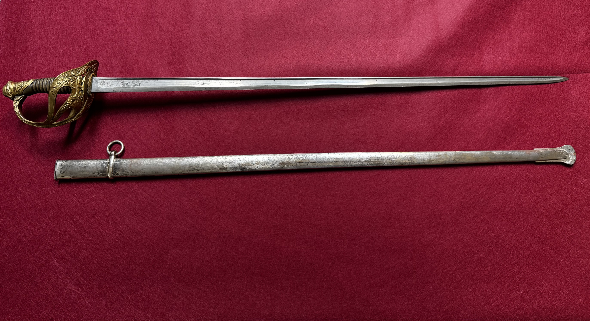
Abstract
The French Model 1896 Cavalry Saber represents a late nineteenth-century effort to modernize French mounted arms while preserving the cutting and thrusting capabilities expected of cavalry weapons. Its steel guard, straight or slightly curved service blade, and military pattern construction reflect the transition from traditional cavalry sword design toward more standardized modern service arms. This example is presented as part of the Historical Sword Society collection for study, documentation, and comparison with earlier French cavalry patterns.
The photographic record
Image Set
Fourteen original collection photographs. Select an image to open the full-size photograph in a new tab.
Full length
Overall profile and curvature.
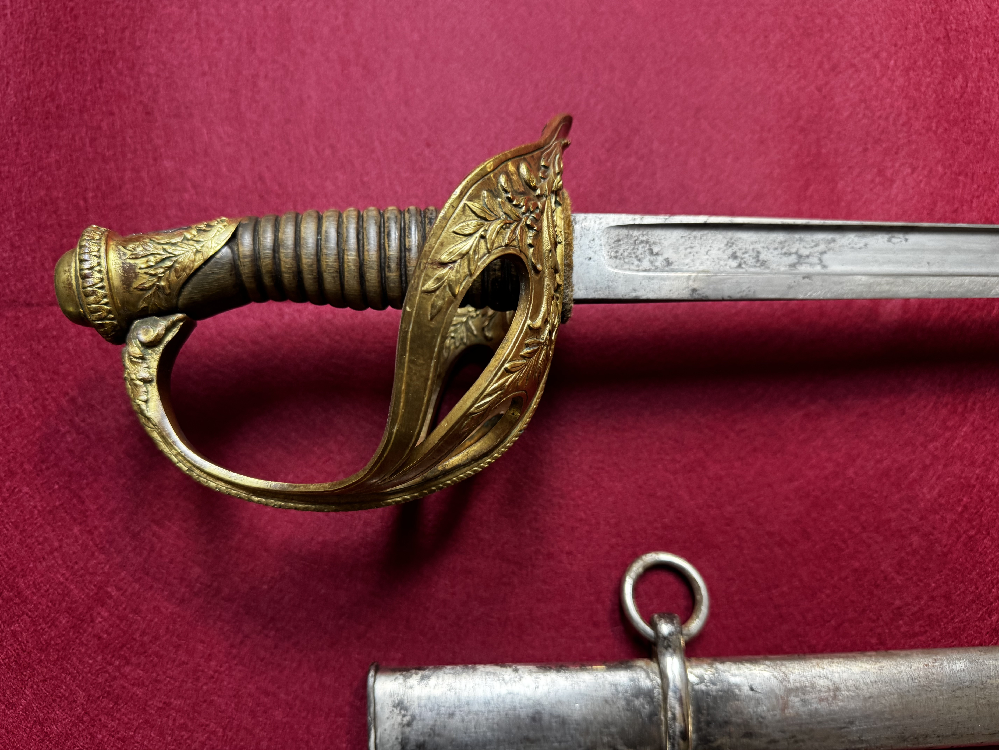
Alternate view
Secondary profile of the blade.

Blade detail
Surface condition and fuller definition.
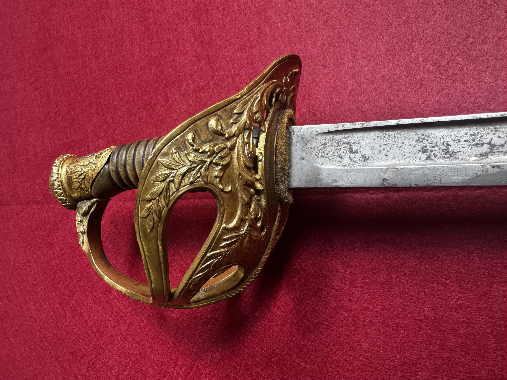
Blade close-up
Edge geometry and wear patterns.
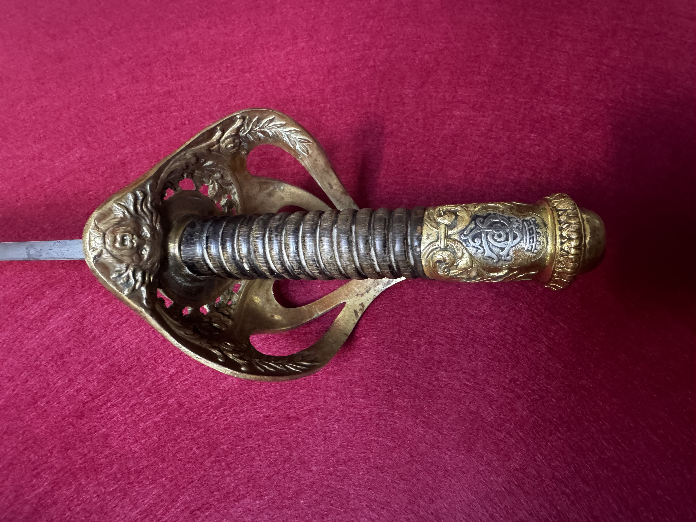
Hilt overview
Guard and grip construction.
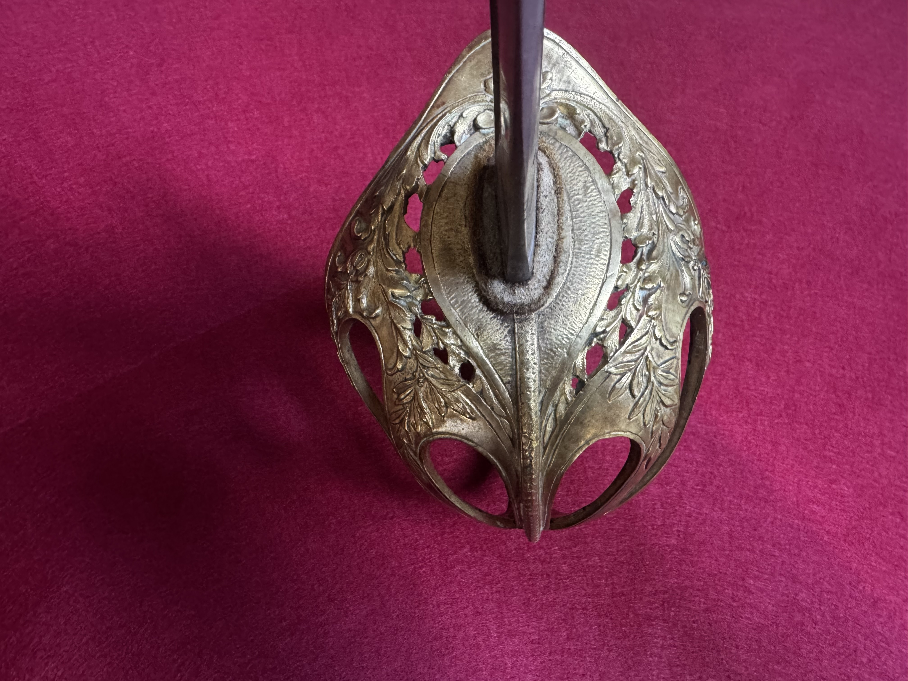
Guard detail
Protective structure and form.
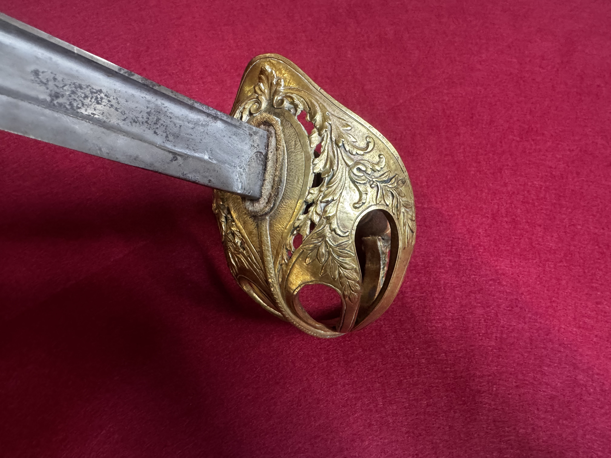
Grip detail
Grip material and wrapping.
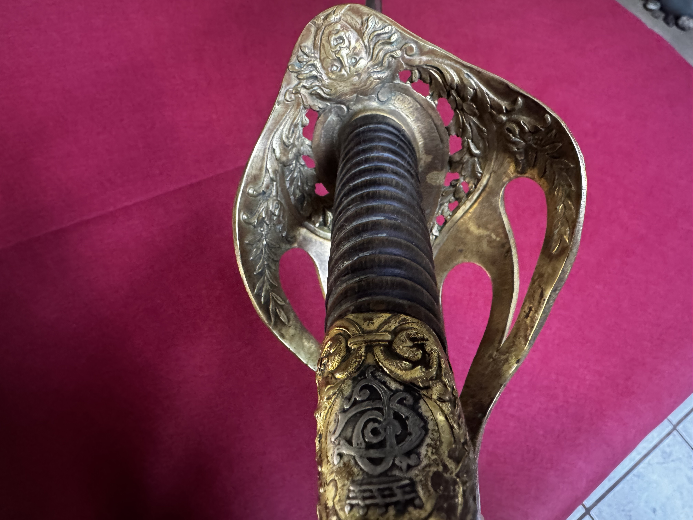
Pommel
Pommel shape and peening.
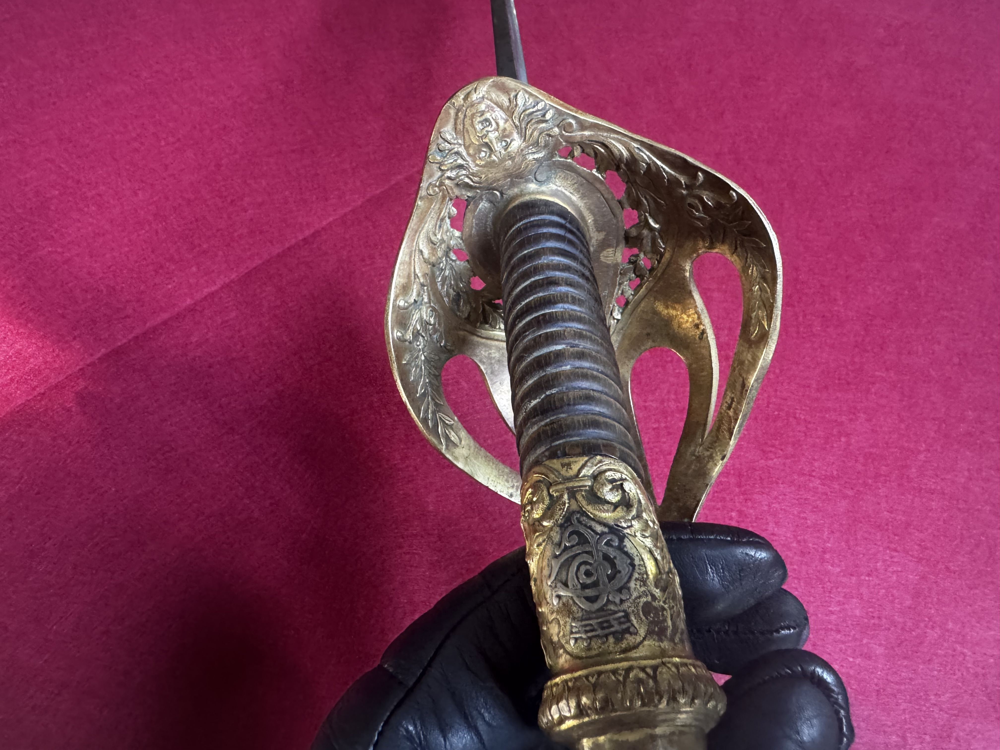
Ricasso
Maker marks and inspection area.
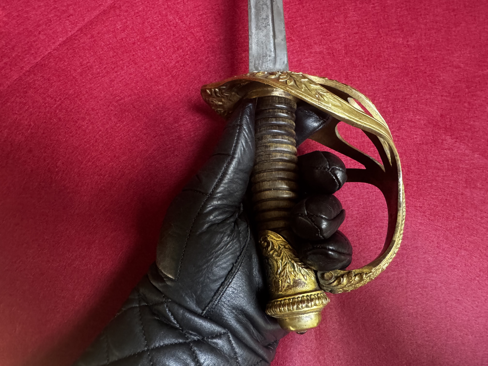
Markings
Stamped or engraved identifiers.
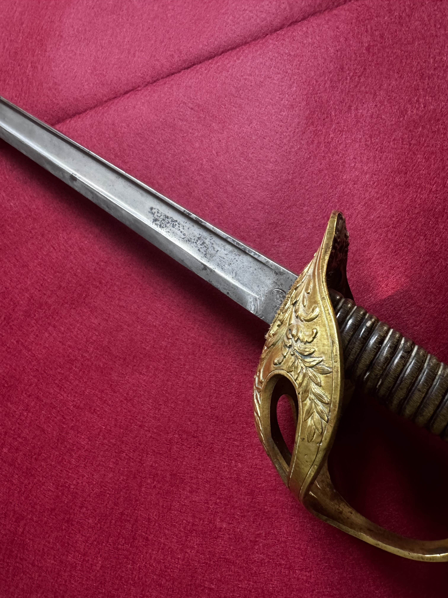
Spine
Blade spine and inscriptions.
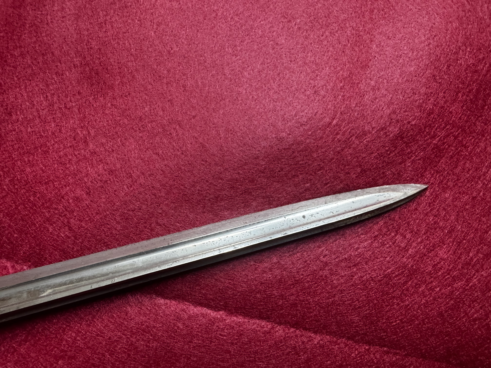
Scabbard
Scabbard body and fittings.
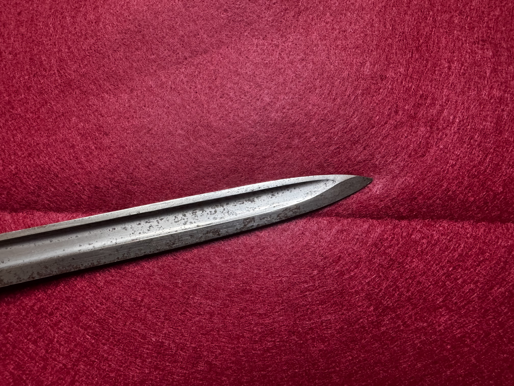
Scabbard detail
Throat, rings, or drag.
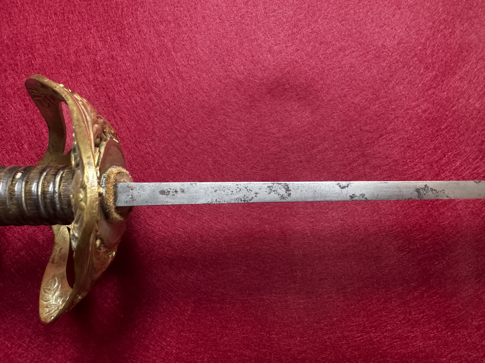
Additional detail
Supplementary view for study.
Specifications
| Overall length | Not yet documented |
|---|---|
| Blade length | Not yet documented |
| Blade width (at ricasso) | Not yet documented |
| Blade thickness (at ricasso) | Not yet documented |
| Point of balance | Not yet documented |
| Weight | Not yet documented |
| Fullers | Not yet documented |
| Edge geometry | Not yet documented |
| Hilt material | Not yet documented |
| Grip | Not yet documented |
| Scabbard | Not yet documented |
Marks, Inscriptions, and Identification Basis
Observed markings
Not yet documented.
Interpretation
Not yet documented.
Identification basis
Not yet documented.
References
Not yet documented.
Condition and Conservation Notes
- Blade: Not yet documented.
- Hilt: Not yet documented.
- Scabbard: Not yet documented.
- Stabilization actions: Not yet documented.
Provenance
Acquisition details, prior ownership, dealer notes, and supporting documentation have not yet been documented.